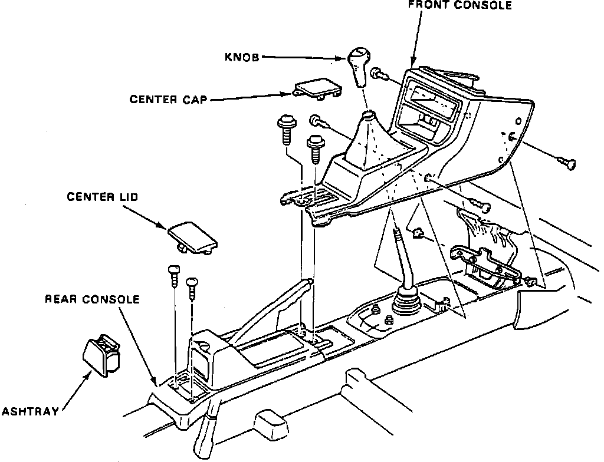
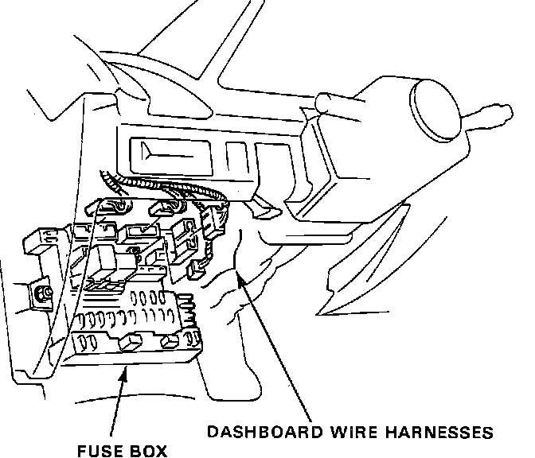
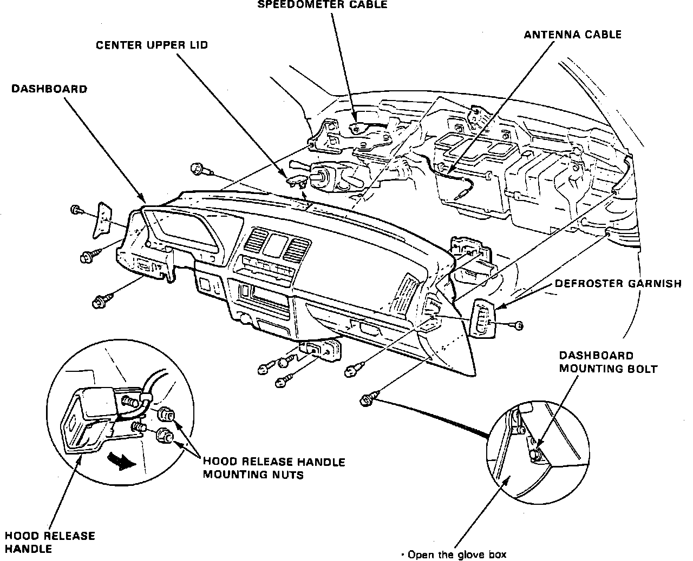

Dashboard / Instrument Panel: Service and Repair
Fig. 2 Exploded View Of Console Assembly:

Fig. 3 I/P Harness Connector:

1. Remove battery ground cable.
2. Remove steering wheel.
3. Remove console as follows:
a. On models equipped with manual transmission, remove shift lever knob.
b. On all models, lift parking brake up, then remove center cap and center lid, Fig. 2.
c. Remove console assembly retaining screws, then the console assembly.
4. Remove fuse lid.
5. Remove instrument panel lower panel, then disconnect instrument wire harness, Fig. 3.
6. Remove two fuse box retaining nuts and lower fuse box if necessary.
7. Remove sunroof switch, then disconnect switch electrical connector.
8. Disconnect ground cable at right of steering column.
9. Remove steering column retaining nuts, then lower steering column.
10. Disconnect air mix cable.
11. Disconnect radio antenna.
12. Remove two hood release handle retaining nuts.
Fig. 4 Exploded View Of I/P:

13. Remove center upper lid from top of instrument panel, Fig. 4.
14. Remove right and left side defroster grilles.
15. Remove instrument panel retaining bolts, then disconnect speedometer cable.
16. Remove instrument panel assembly.
17. Reverse procedure to install.